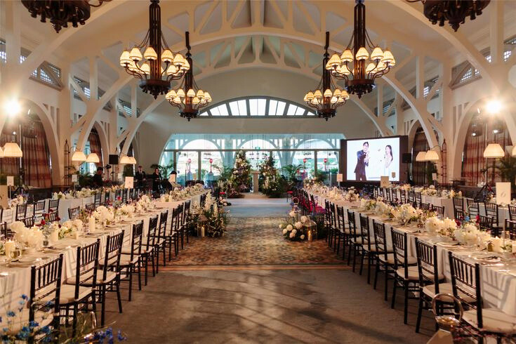

01 / The Fullerton Bay Hotel
J & E
This wedding’s key highlights were its bespoke collateral, table styling and photo wall. Every guest’s menu was personalised with their name — a small detail that required thoughtful coordination.
Our involvement spanned an entire year, from coordinating the overseas pre-wedding shoot to executing the wedding day itself.
With @esakustudio · @papypress · @blackmrktsg